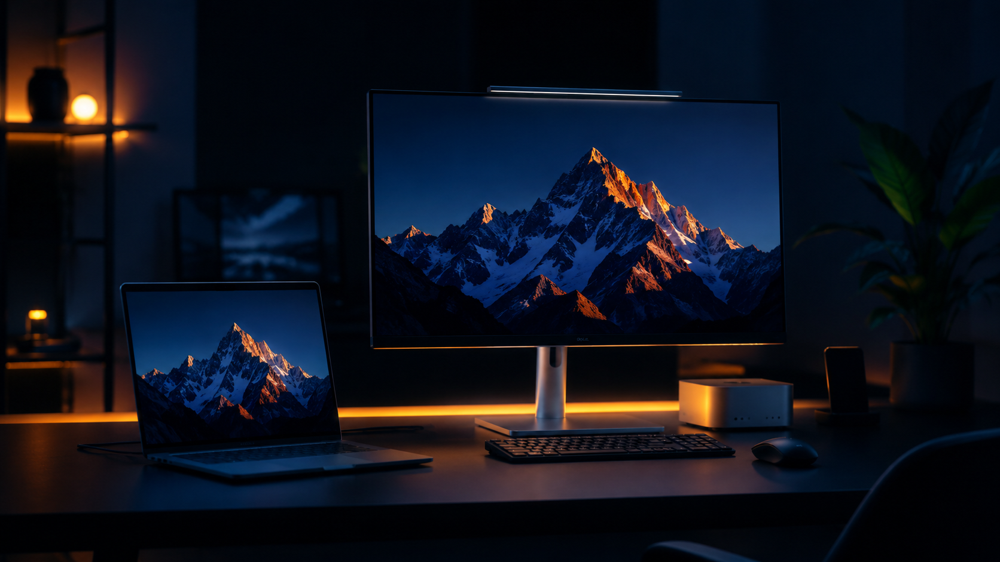
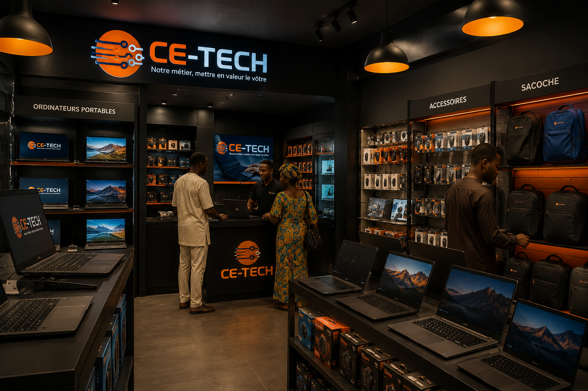

"Notre métier, mettre en valeur le vôtre."
Que vous soyez un professionnel exigeant ou un particulier, nous vous accompagnons avec des équipements de pointe et un service de maintenance réactif, disponible et transparent.

De la vente à la maintenance, en passant par les accessoires — CE-TECH couvre tous vos besoins tech.
Ordinateurs portables et de bureau sélectionnés parmi les plus grandes marques mondiales. Fiabilité, puissance et autonomie adaptées à vos besoins professionnels.
Connectique haute performance, encres, toners, supports de stockage — tout le nécessaire pour alimenter et optimiser votre productivité au quotidien.
Ne laissez pas une panne ralentir vos projets. Nos techniciens experts assurent diagnostic, réparation et optimisation dans les plus brefs délais.

Au cœur de Ouagadougou, nous combinons expertise locale et standards internationaux.
Tous nos équipements proviennent de circuits de distribution officiels, vous assurant une qualité d'origine et des performances optimales.
Basés au Burkina Faso, nous intervenons rapidement pour vos besoins de maintenance et garantissons la continuité de vos activités.
Notre relation ne s'arrête pas à la vente. Nous restons disponibles pour répondre à toutes vos questions techniques après chaque intervention.